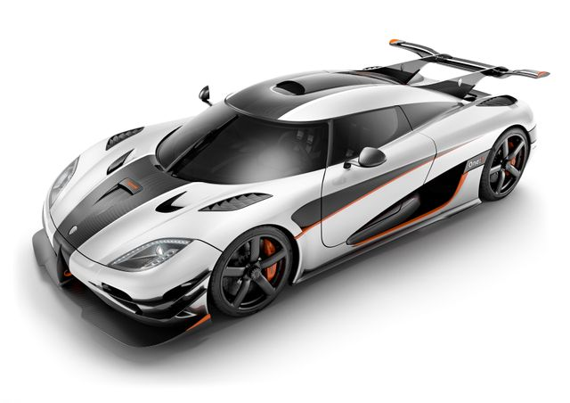

THE MOST BEAUTIFUL CARS
Manufacturer Pagani Automobili S.p.A. Production 2012–2018[1] (100 units) 2017–present (roadster) (100 units) 2017–2019 (BC) (20 units) 2019–present (roadster BC) (40 units) 2019–present (Imola) (5 units) Assembly Modena, Italy Designer Horacio Pagani Body and chassis Class Sports car (S) Body style 2-door coupe 2-door roadster Layout Rear mid-engine, rear-wheel-drive Doors Gull-wing (coupé) Swan (roadster) Related Pagani Zonda R Powertrain Engine 6.0 L (366.1 cu in) twin-turbocharged Mercedes-AMG M158 V12 Power output 730 PS (537 kW; 720 hp) (coupé) 764 PS (562 kW; 754 hp) (roadster) 755 PS (555 kW; 745 hp) (BC) 800 PS (588 kW; 789 hp) (BC roadster) 838 PS (616 kW; 827 hp) (Imola)
Overview Manufacturer Koenigsegg Automotive AB Production March 2011– July 2018 Assembly Ängelholm, Sweden Designer Christian von Koenigsegg Body and chassis Class Sports car (S) Body style 2-door targa top Layout Rear mid-engine, rear-wheel-drive Doors Dihedral Synchro-Helix Powertrain Engine 5.0 L (305 cu in; 5,000 cc) Koenigsegg twin-turbocharged V8 Power output Standard: 706 kW (960 PS; 947 hp) Agera R: 838 kW (1,139 PS; 1,124 hp) Agera S: 758 kW (1,031 PS; 1,016 hp) Agera RS: 865 kW (1,176 PS; 1,160 hp) (1,000 kW (1,360 PS; 1,341 hp)) One:1 / Agera Final: 1,000 kW (1,360 PS; 1,341 hp) Transmission 7-speed dual-clutch Dimensions Wheelbase 2,662 mm (104.8 in) Length 4,293 mm (169.0 in) Width 1,996 mm (78.6 in) Height 1,120 mm (44.1 in) Curb weight Standard/Agera R/Agera S: 1,435 kg (3,164 lb) 1,330 kg (2,932 lb) dry[1] One:1: 1,360 kg (2,998 lb)[2] Agera RS / Agera Final: 1,395 kg (3,075 lb)
Connect with us on...
©All Rights Reserved | Designed by Bill